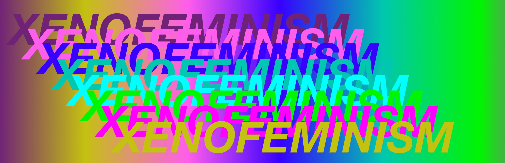

WEEKLY 6: XF!!

Xenofeminism is another manifesto piece concerning the acceleration of technology, the
internet, and its role in society. The piece asks us to reconsider and reimagine the potential for
feminism, especially in the age of increasing complexity and technology. I saw the purpose of
xenofeminism as a right for everyone to speak as no one, it is to get rid of the specifics of
gender, race, and class while also letting other identities bloom. This makes sense as on the
internet and in an era where we are diving so fast into new technologies, will things like gender,
race, and class matter when new identities can be formed online?
The theories of xenofeminism are extremely intersectional and combine things like the
abolishment of gender, technology, and anti-Naturalism. This was definitely a theory that was
hard to wrap my mind around and I am still thinking through it now but is something that is
interesting to consider as we are fully immersed in the age of the internet.